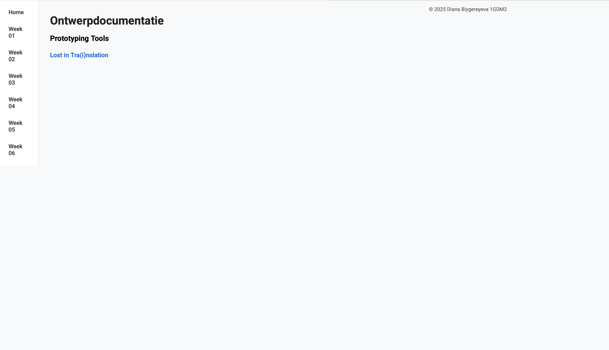
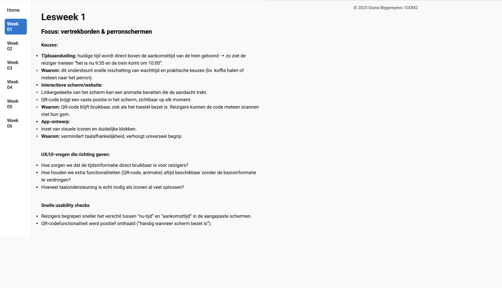
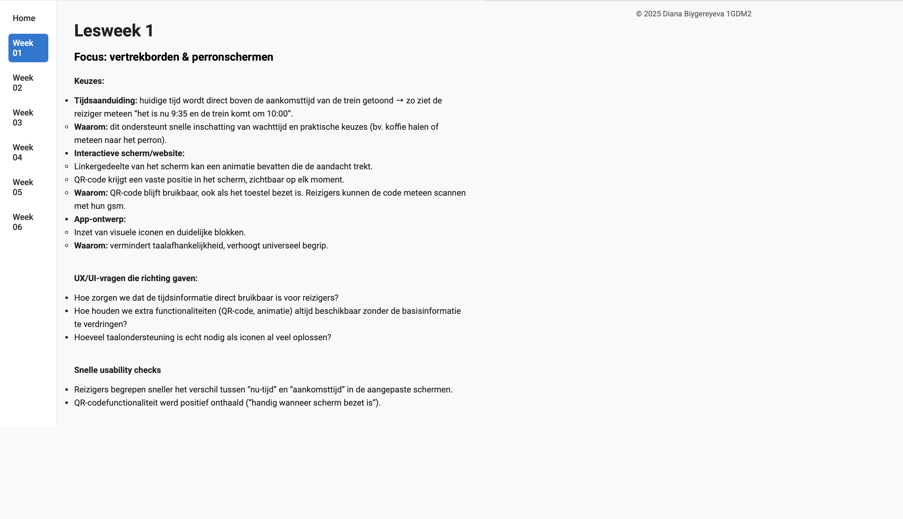
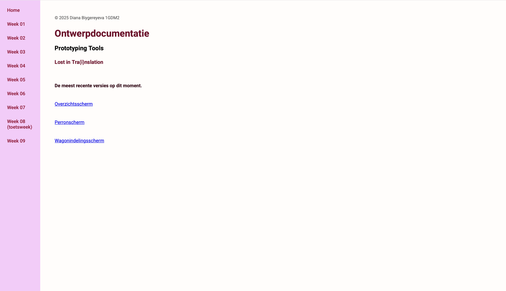
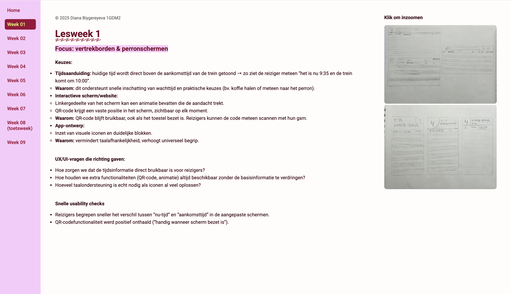
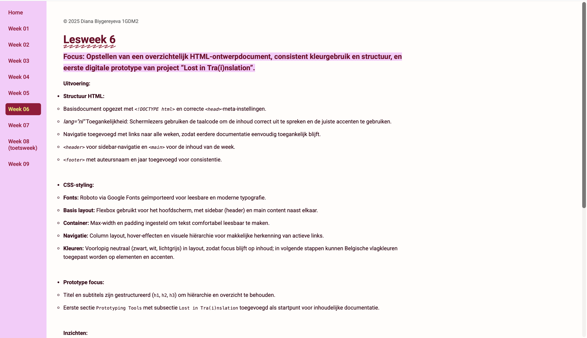
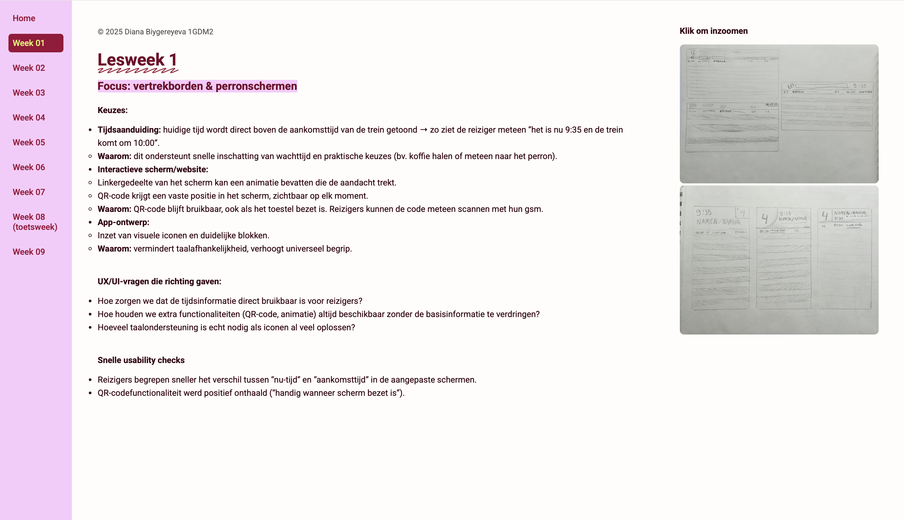
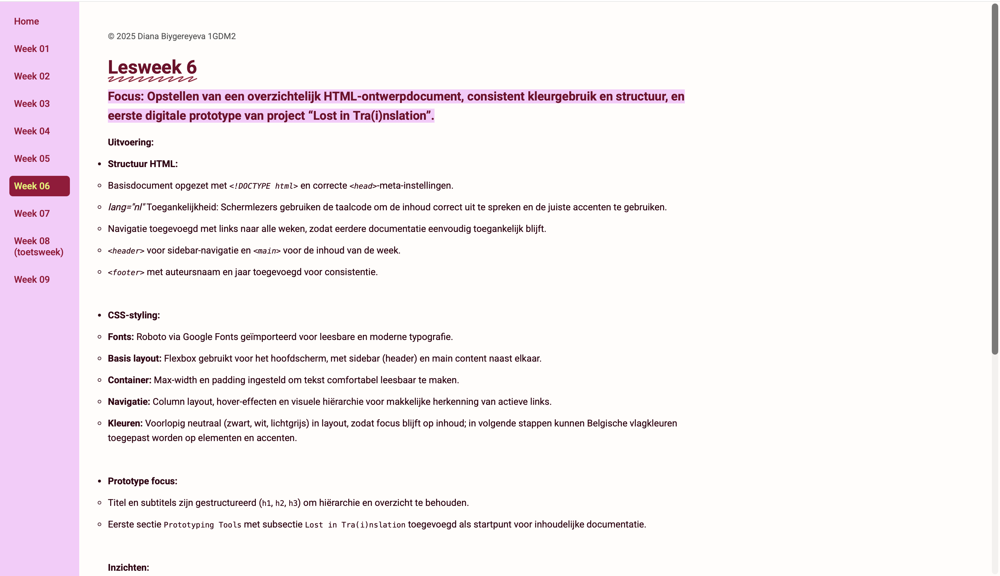

Lesweek 07
Lesweek 07
Uitvoering
1. HTML-aanpassingen
- • Footer verplaatst van einde main naar bovenaan main om nieuwe layout te testen.
- • <aside> toegevoegd voor afbeeldingen, kolom-layout zodat foto's onder elkaar verschijnen en rechts uitgelijnd zijn.
- • Klassen toegevoegd voor aside-afbeeldingen ( img-aside ) voor aparte styling.
- • Structuur behouden: navigatie links in header, content in main, footer zichtbaar en consistent.
2. CSS-aanpassingen
- • Kleuren aangepast naar zachte roze / paars tinten (#FACAFB, #740129) voor herkenbare versie 2 look.
- • Sidebar header kreeg volledige schermhoogte (min-height: 100vh) en contrasterende link-kleuren (#9C0239) met hover (#E2F266).
- • Aside-afbeeldingen: vaste breedte, padding/spacing, object-fit cover en afgeronde hoeken voor visueel rustig en uniform resultaat.
- • Typografie en decoratie: h1 kleuraccent en scribble underline via .fancy . <mark> markeringen passen bij kleuraccenten.
- • Algemene layout: verhoogde main padding, lichtere body achtergrond en donkerdere tekstkleur voor betere leesbaarheid.
3. Prototype focus
- • Low-fi schetsen van interactieve schermen direct overgezet naar Figma als high-fi mockups.
- • Testen van typografie, spacing en kleuraccenten in context van echte schermen.
- • Interactieve flow opgebouwd in Figma, refererend aan HTML/CSS layout versie 2 voor consistentie.
4. Inzichten
- • Loskoppelen van afbeeldingen in aparte aside maakt layout flexibeler en overzichtelijker.
- • Consistent gebruik van kleuren en typografie in HTML/CSS helpt bij het overzetten naar high-fi Figma schetsen.
- • Flexbox en padding/spacings zorgen dat layout rustig blijft, zelfs bij langere content.
- • High-fidelity prototyping kan parallel lopen met documentatie, zodat ontwerpkeuzes sneller zichtbaar en testbaar zijn.
UX/UI-vragen
- • Is de aside met afbeeldingen intuïtief en visueel niet te zwaar voor de gebruiker?
- • Werkt het nieuwe kleurenschema in combinatie met markeringen en headings in high-fi context?
- • Zijn spacing en padding voldoende om tekst en afbeeldingen comfortabel te onderscheiden?
Volgende stappen
- • Verder opbouwen van interactieve high-fi schermen in Figma met behulp van low-fi schetsen.
Coderen








